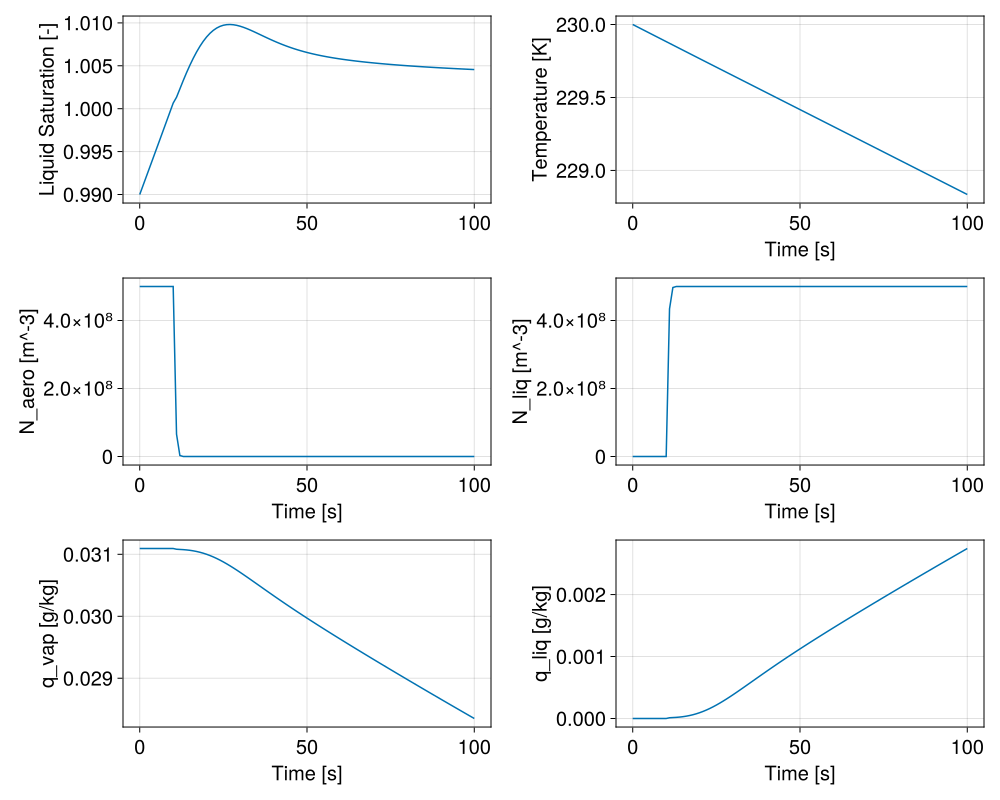
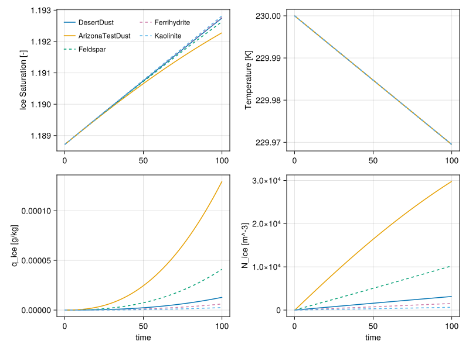
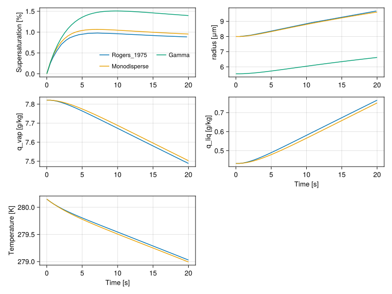
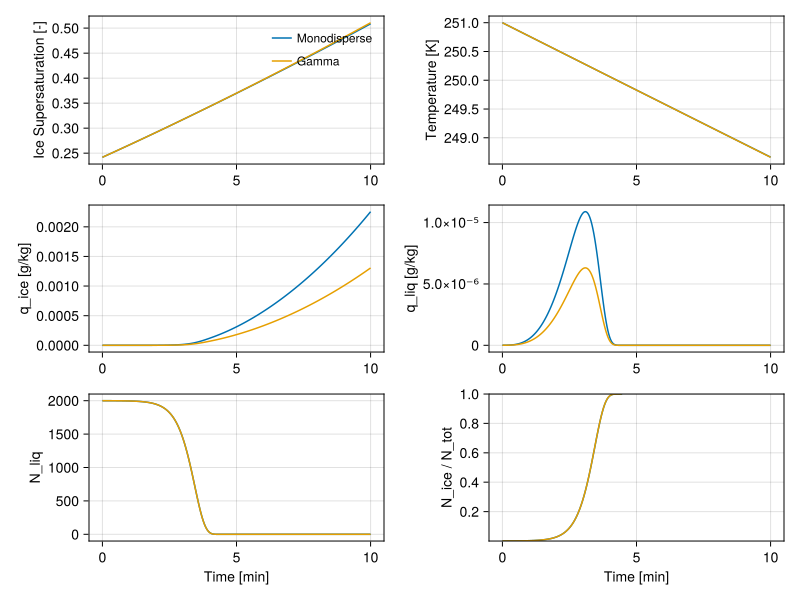
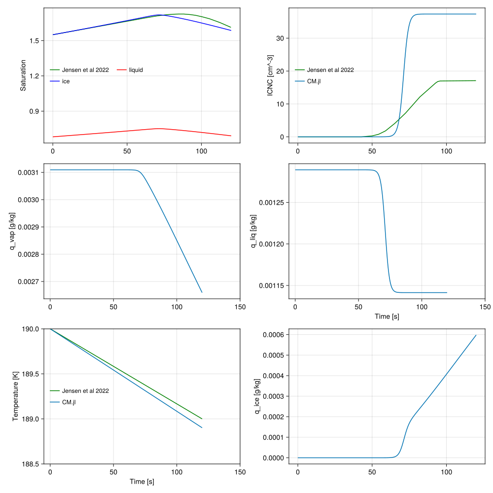
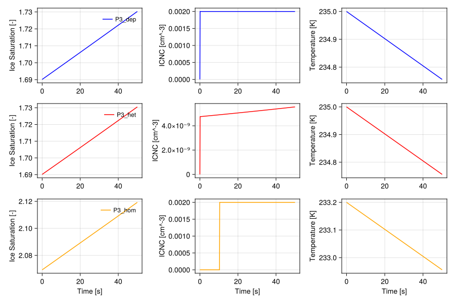

0-dimensional adiabatic parcel model
The model solves for saturation ratio in a 0-dimensional adiabatic parcel raising with constant velocity. It is based on [58], as well as the cirrus box model [59], [60] and is meant as a sandbox for testing different nucleation schemes.
We define liquid saturation ratio $S_l$
\[\begin{equation} S_l = \frac{e}{e_{sl}} \end{equation}\]
where:
- $e$ - is the partial pressure of water vapor,
- $e_{sl}$ - is the partial pressure of water vapor at saturation over liquid water.
Note that some models, for example [58], denote $S_l$ to be supersaturation $\frac{e}{e_{sl}} - 1$.
The change in saturation ratio can be described as
\[\begin{equation} \frac{dS_l}{dt} = \frac{1}{e_{sl}} \frac{de}{dt} - \frac{e}{e_{sl}^2} \frac{de_{sl}}{dt} \end{equation}\]
From ideal gas law the partial pressure of water vapor can be written as
\[\begin{equation} e = q_v p \frac{R_v}{R_a} \end{equation}\]
where:
- $q_v$ is the water vapor specific humidity
- $p$ is the air pressure
- $R_v$, $R_a$ are the gas constants for water vapor and air.
The change in partial pressure can be written as
\[\begin{equation} \frac{de}{dt} = \frac{dq_v}{dt} p \frac{R_v}{R_a} + q_v \frac{dp}{dt}\frac{R_v}{R_a} \end{equation}\]
From the Clausius–Clapeyron relation
\[\begin{equation} \frac{de_{sl}}{dt} = \frac{L_v e_{sl}}{R_v T^2} \frac{dT}{dt} \end{equation}\]
where:
- $L_v$ is the latent heat of vaporization,
- $T$ is the temperature.
From the moist adiabatic assumption
\[\begin{equation} \frac{dT}{dt} = \frac{R_a T}{c_p p} \frac{dp}{dt} + \frac{L_v}{c_p} \frac{dq_{l,vap}}{dt} + \frac{L_s}{c_p} \frac{d q_{i,subl}}{dt} + \frac{L_f}{c_p} \frac{d q_{i,fus}}{dt} \end{equation}\]
where:
- $q_{l,vap}$ is the cloud liquid water specific humidity from vaporization/condensation,
- $q_{i,subl}$ is the cloud ice specific humidity from sublimation/deposition,
- $q_{i,fus}$ is the cloud ice specific humidity from melting/freezing,
- $L_s$ is the latent heat of sublimation,
- $L_f$ is the latent heat of fusion.
From hydrostatic balance and assuming constant vertical velocity:
\[\begin{equation} \frac{dp}{dt} = -\frac{p g}{R_a T} w \end{equation}\]
where:
- $g$ is the gravitational acceleration
- $w$ is the constant vertical velocity.
Accounting for conservation of water, i.e. $\frac{dq_v}{dt} = - \frac{dq_{l,vap}}{dt} - \frac{dq_{i,subl}}{dt}$, and rearranging the terms
\[\begin{equation} \frac{dS_l}{dt} = a_1 w S_l - \left(a_2 + a_3 \right)S_l \frac{dq_{l,vap}}{dt} - \left(a_2 + a_4 \right) S_l \frac{dq_{i,subl}}{dt} - a_5 S_l \frac{dq_{i,fus}}{dt} \end{equation}\]
where:
\[\begin{equation} a_1 = \frac{L_v g}{c_p T^2 R_v} - \frac{g}{R_a T} \end{equation}\]
\[\begin{equation} a_2 = \frac{1}{q_v} \end{equation}\]
\[\begin{equation} a_3 = \frac{L_v^2}{R_v T^2 c_p} \end{equation}\]
\[\begin{equation} a_4 = \frac{L_v L_s}{R_v T^2 c_p} \end{equation}\]
\[\begin{equation} a_5 = \frac{L_v L_f}{R_v T^2 c_p} \end{equation}\]
Saturation ratio over ice can then be related to $S_l$ by the relation
\[\begin{equation} S_i = \xi S_l \label{eq:supersat_relation} \end{equation}\]
where $\xi = \frac{e_{sl}}{e_{si}}$ is the ratio of saturation vapor pressure over liquid and saturation vapor pressure over ice.
The crux of the problem is modeling the $\frac{dq_l}{dt}$ and $\frac{dq_i}{dt}$ for different homogeneous and heterogeneous ice nucleation paths.
Supported size distributions
Currently, the parcel model supports monodisperse, gamma, and lognormal size distributions. For monodisperse size distributions, the total mass is evenly distributed to all particles.
\[\begin{equation} n(r) = N_{tot} \delta(r-\bar{r}) \end{equation} \begin{equation} bar{r} = \left( \frac{3 \rho_a q_l}{4 \pi \rho_l N_{tot}} \right)^{1/3} \end{equation}\]
For a gamma distribution of droplets, a free parameter, $\lambda$, must be constrained. This can be done through relating the specific humidity and volume (assuming spherical droplets and crystals). The mean of $r^3$ is found by dividing the third moment, $M_3$, by the zeroth moment, $M_0$. Once $\lambda$ is found, we can use it to find the mean radius by dividing the first moment, $M_1$, by the zeroth moment, $M_0$.
\[\begin{equation} n(r) = A \; r \; exp(-\lambda r) \end{equation} \begin{equation} \bar{r} = \frac{M_1}{M_0} = \frac{2}{\lambda} \end{equation}\]
where $\lambda = \left(\frac{32 \pi N_{tot} \rho_l}{q_l \rho_a}\right)^{1/3}$.
A similar approach is used for the lognormal size distribution. We assume that the geometric standard deviation, $\sigma_g$, is measured so that the only parameter that needs to be constrained is the median radius, $r_m$.
\[\begin{equation} n(r) = \frac{N_0}{\sqrt{2\pi}} \; \frac{1}{r \: ln(\sigma_g)} \; exp \left[ -frac{(ln(r)-ln(r_m))^2}{2 \: ln^2(\sigma_g)} \right] \end{equation} \begin{equation} \bar{r^3} = \frac{\rho_a}{\rho_w}\frac{3}{4\pi}\frac{q}{N} = \frac{M_3}{M_0} = r_m^3 exp \left( \frac{9}{2} ln^2(\sigma_g)\right) \end{equation} \begin{equation} \bar{r} = \frac{M_1}{M_0} = r_m exp \left( \frac{1}{2} ln^2(\sigma_g)\right) \end{equation}\]
Aerosol Activation
Aerosol activation is described by (see discussion). It is inherently assumed that the aerosols have a lognormal size distribution. For simplicity, the parcel accepts one mode and one aerosol type at a time, therefore, internal mixing is not needed. The maxiumum supersaturation as described in the above mentioned documentation is replaced by the liquid supersaturation in the parcel as it evolves over time.
Standard deviation and r_{mean} of the aerosol size distribution may change as aerosols activate. For now, we will neglect these effects.
Condensation growth
The diffusional growth of individual cloud droplet is described by (see discussion),
\[\begin{equation} r_l \frac{dr_l}{dt} = \frac{1}{\rho_l} \, (S_l - 1) \, G_l(T) \end{equation}\]
where:
- $r_l$ is the droplet radius
- $\rho_l$ is the water density
- $G_l(T) = \left(\frac{L_v}{KT} \left(\frac{L_v}{R_v T} - 1 \right) + \frac{R_v T}{e_{sl} D} \right)^{-1}$ combines the effects of thermal conductivity and water diffusivity,
- $K$ is the thermal conductivity of air,
- $D$ is the diffusivity of water vapor.
Some formulations don't consider the $-1$ term in the denominator of G(T)
Assuming spherical water droplets, the change in droplet mass $m_l$ can be described as
\[\begin{equation} \frac{dm_l}{dt} = 4 \pi \rho_l r^2 \frac{dr_l}{dt} = 4 \pi r_l (S_l - 1) G_l(T) \end{equation}\]
Integrating over the assumed size distribution of droplets
\[\begin{equation} \frac{dq_l}{dt} = \frac{1}{V} \frac{1}{\rho_a} 4 \pi (S_l - 1) G_l(T) \int_{0}^{\infty} n(r) r dr = \frac{1}{\rho_a} 4 \pi (S_l - 1) G_l(T) N_{tot} \bar{r} \end{equation}\]
where:
- $N_{tot}$ is the total number concentration of droplets per volume of air $V$
- $\bar{r}$ is their mean radius
- $\rho_a$ is the density of air.
Deposition growth
Similarly, for a case of a spherical ice particle growing through water vapor deposition
\[\begin{equation} \frac{dm_i}{dt} = 4 \pi \, r_i \, \alpha_m \, (S_i - 1) \, G_i(T) \label{eq:massratesphere} \end{equation}\]
where:
- $r_i$ is the ice particle radius,
- $\alpha_m$ is the accommodation coefficient that takes into account the fact that not all water vapor molecules that arrive at the particle surface will join the growing crystal,
- $G_i(T) = \left(\frac{L_s}{KT} \left(\frac{L_s}{R_v T} - 1 \right) + \frac{R_v T}{e_{si} D} \right)^{-1}$ combines the effects of thermal conductivity and water diffusivity,
The $r_i$ in eq. (\ref{eq:massratesphere}) should be replaced by the capacitance $C$, when considering non-spherical particles. For a sphere $C=r$, for a circular disc $C=2r/\pi$.
It follows that
\[\begin{equation} \frac{dq_i}{dt} = \frac{1}{\rho_a} \alpha_m 4 \pi (S_i - 1) G_i(T) N_{act} \bar{r} \end{equation}\]
where:
- $N_{act}$ is the number of activated ice particles.
Deposition Nucleation on dust particles
There are multiple ways of running deposition nucleation in the parcel. "MohlerAF_Deposition" will trigger an activated fraction approach from [43]. "MohlerRate_Deposition" will trigger a nucleation rate approach from [43]. For both approaches, there is no nucleation if saturation over ice exceeds 1.35 as conditions above this value will result in nucleation in a different mode. "ActivityBasedDeposition" will trigger a water activity based approach from [46]. In this approach, ice production rate $P_{ice, depo}$ is calculated from
\[\begin{equation} P_{ice, depo} = \left[ \frac{dN_i}{dt} \right]_{depo} = J_{depo}\;A_{aero}\;N_{aero} \label{eq:ActivityBasedDeposition_P_ice} \end{equation}\]
where $N_{areo}$ is total number of unactiviated ice nucleating particles and $A_{aero}$ is surface area of those INP. The deposition nucleation methods are parameterized as described in Ice Nucleation.
Immersion Freezing
Following the water activity based immersion freezing model (ABIFM), the ABIFM derived nucleation rate coefficient, $J_{immer}$, can be determined. The ice production rate,$P_{ice, immer}$, per second via immersion freezing can then be calculating using
\[\begin{equation} P_{ice, immer} = \left[ \frac{dN_i}{dt} \right]_{immer} = J_{immer}\;A_{aero}(N_{liq}) \label{eq:ABIFM_P_ice} \end{equation}\]
where $N_{liq}$ is total number of ice nuclei containing droplets and $A_{aero}$ is surface area of the ice nucleating particle.
Homogeneous Freezing
Homogeneous freezing follows the water-activity based model described in the Ice Nucleation section which gives a nucleation rate coefficient of units $cm^{-3}s^{-1}$. The ice production rate from homogeneous freezing can then be determined:
\[\begin{equation} P_{ice, hom} = \left[ \frac{dN_i}{dt} \right]_{hom} = J_{hom}V(N_{liq}) \label{eq:hom_P_ice} \end{equation}\]
where $N_{liq}$ is total number of ice nuclei containing droplets and $V$ is the volume of those droplets.
Example figures
Here we show various example simulation results from the adiabatic parcel model. This includes examples with deposition nucleation on dust, liquid processes only, immersion freezing with condensation and deposition growth, and homogeneous freezing with deposition growth.
First, we check that aerosol activation works reasonably within the parcel.
include("../../parcel/Example_AerosolActivation.jl")CairoMakie.Screen{SVG}

The following examples show ice nucleation, starting with deposition freezing on dust. The model is run three times using the "MohlerAF_Deposition" approach for 30 minutes simulation time, (shown by three different colors on the plot). Between each run the water vapor specific humidity is changed, while keeping all other state variables the same as at the last time step of the previous run. The prescribed vertical velocity is equal to 3.5 cm/s. Supersaturation is plotted for both liquid (solid lines) and ice (dashed lines). The pale blue line uses the "MohlerRate_Deposition" approach. We only run it for the first GCM timestep because the rate approach requires the change in ice saturation over time. With the discontinuous jump in saturation, the parameterization is unable to determine a proper nucleation rate. When we force the initial ice crystal number concentration for this simulation to match that in the "MohlerAF_Deposition" approach, we obtain the same results as in the "MohlerAF_Deposition" approach for the first GCM timestep.
include("../../parcel/Example_Tully_et_al_2023.jl")CairoMakie.Screen{SVG}

The water activity based parameterization for deposition nucleation shows similar outcomes when compared to the "MohlerRate_Deposition" approach. Here, we run the parcel for 100 secs for all available aerosol types. The solid lines correspond to the "MohlerRate_Deposition" approach while the dashed lines correspond to "ActivityBasedDeposition". Note that there is no common aerosol type between the two parameterizations.
include("../../parcel/Example_Deposition_Nucleation.jl")CairoMakie.Screen{SVG}

In the plots below, the parcel model is ran with only condensation (no ice or freezing) assuming either a monodisperse or a gamma distribution of droplets. It is compared to [38].
include("../../parcel/Example_Liquid_only.jl")CairoMakie.Screen{SVG}

The plots below are the results of the adiabatic parcel model with immersion freezing, condensation growth, and deposition growth for both a monodisperse and gamma size distribution. Note that this has not yet been validated against literature. Results are very sensitive to initial conditions.
include("../../parcel/Example_Immersion_Freezing.jl")CairoMakie.Screen{SVG}

The following plots show the parcel model running with homogeneous freezing and depositional growth assuming a lognormal distribution of aerosols. It is compared against [61]. Note that running with the initial conditions described in [61] results in a $\Delta a_w$ smaller than the minimum valid value for the $J_{hom}$ parameterization. We have forced the $\Delta a_w$ to be equal to the minimum valid value in this example only for demonstrative purposes.
include("../../parcel/Example_Jensen_et_al_2022.jl")CairoMakie.Screen{SVG}

P3 Ice Nucleation Parameterizations
The parcel also includes ice nucleation parameterizations used in the P3 scheme as described in [24]. Deposition nucleation is based on the ice crystal number parameterization from Cooper (1986). The heterogeneous freezing parameterization, which follows Bigg(1953) with parameters from Barklie aand Gokhale (1959), is treated as immersion freezing in the parcel. Homogeneous freezing happens instantaneously at 233.15K. Shown below are three separate parcel simulations for deposition nucleation, immersion freezing, and homogeneous freezing. Note that initial temperature varies for each run. The deposition nucleation run does not conserve INP number, while the other two freezing modes do. Updraft velocity is set to 0.5 m/s.
include("../../parcel/Example_P3_ice_nuc.jl")CairoMakie.Screen{SVG}

Immersion Freezing Parametrization based on Frostenberg et al. 2023
Here we show the parcel model results when using the parametrization of immersion freezing based on [44]. The concentration of ice nucleating particles (INPC) depends only on air temperature, and is based on a lognormal relative frequency distribution. New ice crystals are created if the INPC exceeds the existing concentration of ice crystals, provided there are sufficient numbers of cloud liquid droplets to freeze.
Three different implementations of this parametrization are used in the parcel model:
mean- in which INPC is equal to its mean value defined in [44].random- in which INPC is sampled randomly from the distribution defined in [44]. The number of model time steps between sampling is set bysampling_interval.stochastic- in which INPC is solved for as a stochastic process, with the mean and standard deviation defined in [44]. The inverse timescale of the process is set by $\gamma$.
The stochastic implementation is based on the Ornstein-Uhlenbeck process, in which the variable $x$ is a mean-reverting process perturbed by Gaussian random noise (i.e. increments of the Wiener process $W$):
\[\begin{equation} dx = - \gamma(x - \mu)dt + \sqrt{2\gamma} \sigma dW; \quad\quad dW \sim N(0, dt), \end{equation}\]
where $N$ is a zero-mean normal distribution with variance $dt$. For constant $\gamma$ and $\sigma$, and given some initial condition $x(0)=x_0$, $x$ has the analytical solution:
\[\begin{equation} x(t) = x_0 e^{-\gamma t} + \mu (1 - e^{-\gamma t}) + \sqrt{2\gamma} \sigma \int_0^t e^{-\gamma(t-s)} dW, \end{equation}\]
where $\tau \equiv 1 / \gamma$ is the assumed timescale of the process. The process mean is $x_0 e^{-\gamma t} + \mu (1 - e^{-\gamma t})$. We can calculate the variance $\mathbb{V}(t)$ as,
\[\begin{equation} \mathbb{V}(t) = 2\gamma \sigma^2 \int_0^t e^{-2\gamma(t-s)} ds = \frac{g^2}{2\gamma} \left( 1 - e^{-2\gamma t} \right). \end{equation}\]
We use this process to model $x=\log(\text{INPC})$, which tends toward a temperature-dependent mean value $\mu(T)$. The equation for $\log(\text{INPC})$ is then,
\[\begin{equation} d\log(\text{INPC}) = - \frac{\log(\text{INPC}) - μ}{\tau} dt + \sigma \sqrt{\frac{2}{\tau}} dW \end{equation}\]
This equation is currently implemented with the simple Euler-Maruyama method, which is the stochastic analog of the forward Euler method for (deterministic) ordinary differential equations, so that
\[\begin{equation} \log(\text{INPC})_{t+dt} = \log(\text{INPC})_{t} - \gamma\left(\log(\text{INPC})_t - μ(T_t)\right) dt + \sigma \sqrt{2\gamma dt} z_t \end{equation}\]
where $z_t \sim N(0,1)$ is a standard normal random variable.
The following plot shows resuls of the parcel model with the mean (black line), random (dotted lines) and stochastic (solid lines) parameterization options. We show results for two sampling intervals $\Delta t$ (random), two process time scales $\tau$ (stochastic), and two model time steps dt.